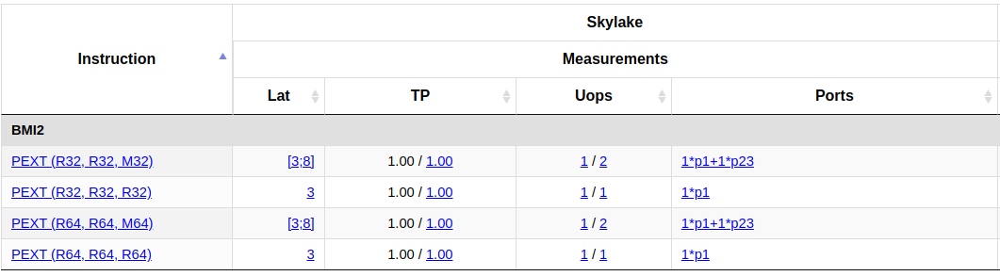

<!doctype html>
<html>
  <head>
    <meta charset="utf-8">
    <meta name="viewport" content="width=device-width, initial-scale=1.0, maximum-scale=1.0, user-scalable=no">

    <title>Embedding reflections</title>

    <link rel="stylesheet" href="reveal.js/css/reveal.css">
    <link rel="stylesheet" href="reveal.js/css/theme/league.css" id="theme">
    <link rel="stylesheet" href="extensions/plugin/line-numbers/line-numbers.css">
    <link rel="stylesheet" href="extensions/css/highlight-styles/zenburn.css">
    <link rel="stylesheet" href="extensions/css/custom.css">

    <style>
      .reveal h1, .reveal h2, .reveal h3, .reveal h4, .reveal h5 { text-transform: none; }
    </style>

    <script>
      var link = document.createElement( 'link' );
      link.rel = 'stylesheet';
      link.type = 'text/css';
      link.href = window.location.search.match( /print-pdf/gi ) ? 'reveal.js/css/print/pdf.css' : 'reveal.js/css/print/paper.css';
      document.getElementsByTagName( 'head' )[0].appendChild( link );

      function set_address(self, remote, local) {
        if (window.location.search.match("local")) {
          self.href = local;
        } else {
          self.href = remote;
        }
      }
    </script>

    <meta name="description" content="~~Template~~ Meta-Programming">
    <meta name="author" content="Kris Jusiak">
    <meta name="apple-mobile-web-app-capable" content="yes">
    <meta name="apple-mobile-web-app-status-bar-style" content="black-translucent">
  </head>

  <body>
    <div class="reveal">
      <div class="slides">
          <script type="text/template">
          </script>
          </section>

          <section data-markdown=""
                   data-separator="^====+$"
                   data-separator-vertical="^----+$">
          <script type="text/template">


---

## Embedding reflections


---

###### [kris@jusiak.net](mailto:kris@jusiak.net) | [@krisjusiak](https://twitter.com/krisjusiak) | [linkedin.com/in/kris-jusiak](https://www.linkedin.com/in/kris-jusiak)

----

#### Agenda
* #### Motivation
<!-- .element: class="fragment" -->

* #### Reflection
<!-- .element: class="fragment" -->

  * #### Examples
  <!-- .element: class="fragment" -->

* #### Case study
<!-- .element: class="fragment" -->

* #### Summary
<!-- .element: class="fragment" -->

---

###### Powered by [Compiler Explorer](https://godbolt.org)
<!-- .element: class="fragment" -->

----

##### Motivation

- ##### Correctness/safety
<!-- .element: class="fragment" -->

  - ##### Safe APIs, checks against the spec
<!-- .element: class="fragment" -->

- ##### Performance
<!-- .element: class="fragment" -->

  - ##### Design by introspection (move conditions to compile-time)
  <!-- .element: class="fragment" -->

    ##### `if constexpr (requires { ... })`
<!-- .element: class="fragment" -->

  - ##### Injection (code generation)
  <!-- .element: class="fragment" -->

      ##### `switch { ... }`
  <!-- .element: class="fragment" -->

  - ##### SoA - structure of arrays
<!-- .element: class="fragment" -->

  - ##### `pack(T)`
<!-- .element: class="fragment" -->

----

##### Motivation

- ##### Maintability/Flexibility
<!-- .element: class="fragment" -->

  ##### `serialize(T)`
<!-- .element: class="fragment" -->

- ##### Debuggability (dump struct)
<!-- .element: class="fragment" -->
  ##### `log(T)`
<!-- .element: class="fragment" -->

----

##### Reflection

- ##### Dynamic (at run-time)
<!-- .element: class="fragment" -->

- ##### Static (at compile-time*)
<!-- .element: class="fragment" -->

  - ##### \*almost!
<!-- .element: class="fragment" -->

----

##### Reflection

- ##### What?
  - ##### Introspection
<!-- .element: class="fragment" -->
      - ##### get enum name, get members of a struct
<!-- .element: class="fragment" -->
      - ##### find all functions in the namespace
<!-- .element: class="fragment" -->
      - ##### ...
<!-- .element: class="fragment" -->

  - ##### Injection/Code generation
<!-- .element: class="fragment" -->
      - ##### convert array of structs to struct of arrays
<!-- .element: class="fragment" -->
      - ##### generate switch case
<!-- .element: class="fragment" -->
      - ##### ...
<!-- .element: class="fragment" -->

----

##### Reflection

- ##### How?

  - ##### code generation (libclang + cmake)
<!-- .element: class="fragment" -->

  - ##### compiler hacks (`__PRETTY_FUNCTION__`, friend injection)
<!-- .element: class="fragment" -->

  - ##### compiler builtins (`__builtin_dump_struct` - clang)
<!-- .element: class="fragment" -->

  - ##### compilers with reflection (https://www.circle-lang.org)
<!-- .element: class="fragment" -->

  - ##### language support
<!-- .element: class="fragment" -->
    - ##### C++2X - meta-classes (https://github.com/hsutter/cppfront)
<!-- .element: class="fragment" -->
    - ##### C++2X - mirror (https://wg21.link/P0385)
<!-- .element: class="fragment" -->
    - ##### C++26* - static reflection (https://wg21.link/P2996)
<!-- .element: class="fragment" -->

----

##### Reflection for C++26 (https://wg21.link/P2996)

- ##### value based
<!-- .element: class="fragment" -->
    ```
      ^T                // lift (reflexpr)
      | std::meta::info // AST info
      | [: ... :]       // splicer (unreflexpr)
      ;
    ```
<!-- .element: class="fragment" -->

- ##### consteval based (harder to test as no lowering to run-time)
<!-- .element: class="fragment" -->

- ##### template meta-programming included
<!-- .element: class="fragment" -->
  ```cpp
  static_assert(
    [: std::meta::substitute(^type_list,  // consteval
        std::vector{^int, ^float}         // std::vector{meta::info}
      | std::views::reverse               // stl::ranges
      | std::views::drop(1)
    ) :] == type_list<float>);
  ```
  <!-- .element: class="fragment" -->

  - ##### Possible in C++20 (https://github.com/boost-ext/mp)
  <!-- .element: class="fragment" -->

----

#### C++26 - introspection - https://godbolt.org/z/564szqv6M

```cpp
struct foo { char a; int b; float c; };
```
<!-- .element: class="fragment" -->

---

```cpp
static_assert(reflect<foo> == // see godbolt for implementation
  std::array{
    info{.name = "a", .size = 1, .offset = 0, .alignment = 1},
    info{.name = "b", .size = 4, .offset = 4, .alignment = 4},
    info{.name = "c", .size = 4, .offset = 8, .alignment = 4},
  }
);
```
<!-- .element: class="fragment" -->

##### Possible in C++20 (https://github.com/boost-ext/reflect)
<!-- .element: class="fragment" -->

----

#### C++26 - introspection

```cpp
^:: // error (reflecting global namespace)
```
<!-- .element: class="fragment" -->

---

##### [2024/03] P2996 doesn't support reflecting namespaces yet
<!-- .element: class="fragment" -->

----

#### C23 - introspection - #embed (https://wg21.link/P1967)

```cpp
struct foo {};
struct bar {};
auto fn() -> void;
```
<!-- .element: class="fragment" -->

---

```cpp
static_assert(not meta_contains<"struct x">);
static_assert(not meta_contains<"STD::string_view">);
static_assert(meta_contains<"std::string_view">);
static_assert(meta_contains<"struct foo">);
static_assert(meta_contains<"struct bar">);
static_assert(meta_contains<"auto fn()">);
```
<!-- .element: class="fragment" -->

---

```cpp
template<fixed_string Name> // #embed is C23 and not C++23
constexpr auto meta_contains = [] {
  static constexpr char self[] = { #embed __FILE__ };
  const auto code = std::string_view(std::data(self), std::size(self));
  const auto find = code.find(Name);
  return find != std::string_view::npos and code[find-1] != '\"';
}();
```
<!-- .element: class="fragment" -->

----

#### C++26 - injection - https://godbolt.org/z/ExYfTv4nK

```cpp
struct unpacked { short s; int i; bool b; };

static_assert(12 == sizeof(unpacked));
```
<!-- .element: class="fragment" -->

---

```cpp
using packed = pack<unpacked>; // see godbolt for implementation

static_assert(8 == sizeof(packed));
static_assert(requires(packed p) { p.i; p.s; p.b; });
```
<!-- .element: class="fragment" -->

##### Possible in C++11+ but will return a std::tuple instead of new struct
<!-- .element: class="fragment" -->

----

#### C++26 - injection - https://godbolt.org/z/d7GrW1j76

```cpp
// compile-time counter
static_assert(next() == 0);
static_assert(next() == 1);
```
<!-- .element: class="fragment" -->

---

```cpp
// compile-time type list
static_assert(typeid(get_list_t<>) == typeid(type_list<>));

append_t<int>();
static_assert(typeid(get_list_t<>) == typeid(type_list<int>));

append_t<float>();
static_assert(typeid(get_list_t<>) == typeid(type_list<int, float>));
```
<!-- .element: class="fragment" -->

##### Possible since C++17+ via friend injection (stateful meta-programming)
<!-- .element: class="fragment" -->

----

#### CppMeta - injection - https://www.codereckons.com/articles/65cbc0511318c3d21078737b

```cpp
consteval void gen_cases(auto& builder, auto cases) {
  for (auto e : constants(cases)) {
    append_case(builder, make_decl_ref_expr(e)); // case N:
    append_return(builder, name_of(e));          //   return "...";
  }
}
```
<!-- .element: class="fragment" data-fragment-index="2" -->

```cpp
template <class E>
constexpr auto to_string(E value) {
  switch(value) {
    %gen_cases(^E); // code generation...
    default : 
      return "";
  }
}
```
<!-- .element: class="fragment" data-fragment-index="0" -->

##### Possible in C++98+ but very limited (via nested switch / performance depends on the compiler ability to flatten it)
<!-- .element: class="fragment" -->

----

##### Case study - `enum_name`

```cpp
// simple enum
enum E { A, B };
```
<!-- .element: class="fragment" -->

```cpp
// flag enum
enum class E_flag { A=0b001,
                    B=0b010,
                    C=0b100, };
```
<!-- .element: class="fragment" -->

```cpp
// combined cases enum
enum class E_combined { UNKNOWN=-1,
                        A=0,
                        B=10,
                        C=20,
                        D=30,
                        E=40,
                        BIG=100, };
```
<!-- .element: class="fragment" -->

----

#### C++26 - enum_name - https://godbolt.org/z/Eqffvn4dz

```cpp
template<class E>
  requires std::is_enum_v<E>
constexpr auto enum_name(const E value) -> std::string {
  std::string result = ""; // unknown
  [:expand(std::meta::enumerators_of(^E)):] >> [&]<auto e> {
    if (value == [:e:]) {
      result = std::meta::name_of(e);
    }
  };
  return result;
}
```
<!-- .element: class="fragment" data-fragment-index="0" -->

---

```cpp
static_assert("A" == enum_name(E::A));
static_assert("B" == enum_name(E::B));
static_assert(""  == enum_name(E(42));
```
<!-- .element: class="fragment" data-fragment-index="1" -->

- ##### As currently implemented in https://wg21.link/P2996
<!-- .element: class="fragment" data-fragment-index="0" -->

----

#### C++26 - enum_name - https://godbolt.org/z/Eqffvn4dz

```cpp
template <class E>
  requires std::is_enum_v<E>
constexpr auto enum_name(E value) -> std::string {
  template for (constexpr auto e : std::meta::enumerators_of(^E)) {
    if (value == [:e:]) {
      return std::string(std::meta::name_of(e)); // can early exit
    }
  }
  return ""; // unknown
}
```
<!-- .element: class="fragment" data-fragment-index="0" -->

---

```cpp
static_assert("A" == enum_name(E::A));
static_assert("B" == enum_name(E::B));
static_assert(""  == enum_name(E(42));
```
<!-- .element: class="fragment" data-fragment-index="1" -->

- ##### Expansion statements - https://wg21.link/P1306
<!-- .element: class="fragment" data-fragment-index="0" -->

----

#### C++26 - enum_name - https://godbolt.org/z/s54hhP3Ys

```cpp
template auto enum_name(E) -> std::string; // x86-64 assembly
```
<!-- .element: class="fragment" -->


<!-- .element: class="fragment" -->

###### EDG (experimental reflection)
<!-- .element: class="fragment" -->

----

#### C++26 - enum_name - trade-offs?

- ##### compile-time
<!-- .element: class="fragment" -->

  - ##### compilation times
<!-- .element: class="fragment" -->

- ##### run-time
<!-- .element: class="fragment" -->

  - ##### performance
<!-- .element: class="fragment" -->

    - ##### if-else/jump-table/switch-case/hashing
<!-- .element: class="fragment" -->

  - ##### binary size
<!-- .element: class="fragment" -->

    - ##### return type / shared buffers
<!-- .element: class="fragment" -->

  - ##### usability
<!-- .element: class="fragment" -->

    - ##### unknown value / flag enums (A|B)
<!-- .element: class="fragment" -->

----

#### v2::enum_name

---

##### Trying to address enum-name's trade-offs
<!-- .element: class="fragment" -->

----

#### v2::enum_name

```cpp
template<
  class R = std::string_view,    // safe default
  R unknown = {},                // needs fixed_string
  auto policy = enum_name_policy // we will get back to that...
> 
```
<!-- .element: class="fragment" data-fragment-index="0" -->

```cpp
[[nodiscard]] constexpr auto enum_name(Enum auto e) noexcept -> R {
  if constexpr (constexpr auto cases = std::meta::enumerators_of(^E);
    std::empty(cases)) {
    return unknown;
  } else {
    return policy.template operator()<R, cases, unknown>(e);
  }
```
<!-- .element: class="fragment" data-fragment-index="1" -->

```cpp
}
```
<!-- .element: class="fragment" data-fragment-index="0" -->

----

##### `if-else` - https://godbolt.org/z/fbcT76ocT

```cpp
template <class R, auto cases, auto unknown>
[[nodiscard]] constexpr auto if_else(Enum auto e) noexcept -> R {
```
<!-- .element: class="fragment" data-fragment-index="0" -->

```cpp
  static constexpr auto buffer = to<std::array>(cases); // "AB"

  template for (constexpr auto case : cases) { // P1306
    if (value == [:case:]) {
      return make<R>(&buffer[offset<cases>(case)], size<cases>(case));
    }
  }

  return unknown;
```
<!-- .element: class="fragment" data-fragment-index="1" -->

```cpp
}
```
<!-- .element: class="fragment" data-fragment-index="0" -->

----

##### `if-else` - https://godbolt.org/z/fbcT76ocT

```cpp
enum E { A, B };
```
<!-- .element: class="fragment" data-fragment-index="0" -->

---

```cpp
enum_name(E):
        test    edi, edi
        je      .L4
        xor     eax, eax
        xor     edx, edx
        cmp     edi, 1
        je      .L7
.L3:
        xchg    rdx, rax
        ret
.L4:
        mov     eax, buffer   // A
.L2:
        mov     edx, 1        // size
        jmp     .L3
.L7:
        mov     eax, buffer+1 // B
        jmp     .L2
buffer:
        .ascii  "AB"          // enum names
```
<!-- .element: class="fragment" data-fragment-index="1" -->

----

##### `jump-table` - https://godbolt.org/z/v59f6czns

```cpp
template<class R, auto cases, auto unknown>
[[nodiscard]] constexpr auto jump_table(Enum auto e) noexcept -> R {
```
<!-- .element: class="fragment" data-fragment-index="0" -->

```cpp
  return [&]<auto... Is>(std::index_sequence<Is...>) {
```
<!-- .element: class="fragment" data-fragment-index="1" -->

```cpp
    static constexpr buffer = to<std::array>(cases); // "AB"
    static constexpr struct
      alignas(std::hardware_destructive_interference_size)
        : std::array<std::string_view, sizeof...(Is)> { } array {
      [&] {
        if constexpr (constexpr auto case = cases[I]) {
          return make<R>(&buffer[offset<cases>(case)], size<cases>(case));
        } else {
          return unknown;
        }
      }()...
    } jump_table{};

    return jump_table[value-enum_parsed.min()];
```
<!-- .element: class="fragment" data-fragment-index="2" -->

```cpp
  }(std::make_index_sequence<std::size(cases)>{});
```
<!-- .element: class="fragment" data-fragment-index="1" -->

```cpp
}
```
<!-- .element: class="fragment" data-fragment-index="0" -->

----

##### `jump-table` - https://godbolt.org/z/v59f6czns

```cpp
enum_name(E):
        movl    %edi, %edi
        salq    $4, %rdi
        movq    jump_table(%rdi), %rax
        movq    jump_table+8(%rdi), %rdx
        ret
```
<!-- .element: class="fragment" data-fragment-index="0" -->

```cpp
jump_table:
        .quad   1        // size
        .quad   buffer   // A
        .quad   1        // size
        .quad   buffer+1 // B
        .zero   32       // align to 64 (x86-64 cacheline)
```
<!-- .element: class="fragment" data-fragment-index="1" -->

```cpp
buffer:
        .ascii  "AB"     // enum names
```
<!-- .element: class="fragment" data-fragment-index="2" -->

----

##### `switch-case`


##### Compiler heuristics for switch lowering strategies 
<!-- .element: class="fragment" data-fragment-index="0" -->

- ##### bitset (gcc)
<!-- .element: class="fragment" -->
- ##### if-else (gcc/clang)
<!-- .element: class="fragment" -->
- ##### jump-table (gcc/clang)
<!-- .element: class="fragment" -->
- ##### binary decision tree (gcc/clang)
<!-- .element: class="fragment" -->

---

##### https://github.com/gcc-mirror/gcc/blob/master/gcc/tree-switch-conversion.cc
<!-- .element: class="fragment" data-fragment-index="0" -->

----

##### `switch-case` - https://godbolt.org/z/vozn8csWr

```cpp
template<auto enum_parsed, fixed_string unknown>
[[nodiscard]] constexpr auto switch_case(const auto value)  {
```
<!-- .element: class="fragment" data-fragment-index="0" -->

```cpp
  constexpr auto infos = enum_parsed.infos;
  static constexpr auto buffer = enum_parsed.buffer;

  const auto switch_case = [&]<auto I = 0>(auto switch_case) {
    switch (value) {
      default: {
        if constexpr (I < enum_parsed.max()) {
          return switch_case.template operator()<I+1>(switch_case);
        }
      }
      case infos[I].index:
        return {&buffer[infos[I].begin], infos[I].size};
    }
  };

  return switch_case(switch_case);
```
<!-- .element: class="fragment" data-fragment-index="1" -->

```cpp
}
```
<!-- .element: class="fragment" data-fragment-index="0" -->

----

##### `switch-case` - https://godbolt.org/z/vozn8csWr

```cpp
enum_name(E):
        test    edi, edi
        mov     edx, buffer+1 // B
        mov     eax, buffer   // A
        cmovne  rax, rdx
        mov     rdx, rax
        mov     eax, 1       // size
        ret
buffer:
        .ascii  "AB"
```

----

##### Minimal-Perfect-Hashing


- ##### Given a list of N keys (known at compile-time) find a perfect hash function (maps keys into range from 0 to N-1)
<!-- .element: class="fragment" -->

  - ##### Hardware accelerated (bit manipulation instructions sets)
  <!-- .element: class="fragment" -->

  - ##### Brute-force* hash finding (multiply/shift/xor)
  <!-- .element: class="fragment" -->

----

##### [x86-64/BMI2] PEXT Instruction

##### https://www.intel.com/content/www/us/en/docs/intrinsics-guide/index.html#text=pext
<!-- .element: class="fragment" -->

```cpp
word:   0010101011010111
mask:   0011100100100010
masked: __101__0__0___1_
PEXT:   __________101001
```
<!-- .element: class="fragment" -->

---

#### https://uops.info/table.html?search=pext
<!-- .element: class="fragment" -->


<!-- .element: class="fragment" -->

----

##### Minimal-Perfect-Hashing - https://github.com/boost-ext/mph

```cpp
template <auto cases, fixed_string unknown>
[[nodiscard]] auto mph(const auto value) noexcept -> std::string_view {
  constexpr auto indexes = [&]<auto... Is>(std::index_sequence<Is...>) {
    return std::array{std::pair{cases[Is].index, cases[Is].begin}...};
  }(std::make_index_sequence<std::size(cases)>{});

  constexpr auto policies = []<const auto...ts>(auto&&... args) {
    return mph::pext<8u, mph::unconditional>{}.template operator()<ts...>(std::forward<decltype(args)>(args)...);
  };

  const auto begin = mph::hash<indexes, policies>(value);
  static constexpr const auto buffer = enum_parsed.first;
  return std::string_view{&buffer[begin+1], std::size_t(buffer[begin])};
}
```
<!-- .element: class="fragment" -->

----

#### Minimal-Perfect-Hashing - https://godbolt.org/z/6P3crWvEW

```
enum class e_combined {
  zero = 0,
  big = 879,
  _3 = 3,
  _4 = 4,
  _5 = 5,
  _6 = 6,
  _7 = 7,
};
```
<!-- .element: class="fragment" -->

----

#### Minimal-Perfect-Hashing - https://godbolt.org/z/G5oe9Ws3v

```cpp
enum_name(e_combined):
  mov eax, 519       // mask computed at compile-time
  pext edi, edi, rdx // bmi2 - hardware accelerated
  movzx edx, BYTE PTR index[rdi]
  movsx rdx, BYTE PTR buffer[rdx]
  ret
```
<!-- .element: class="fragment" -->

```cpp
index: // index table for offsets in the buffer
  .byte 0  .byte 0  .byte 0  .byte 5
  .byte 8  .byte 11 .byte 14 .byte 17
  .byte 0  .byte 0  .byte 0  .byte 0
  .byte 0  .byte 0  .byte 0  .byte 20
```
<!-- .element: class="fragment" -->

```cpp
buffer:
  .string "\4zero\2_32_4\2_5\2_6\2_7\3big" // [size][name]...
```
<!-- .element: class="fragment" -->

##### Same assembly for different enums  but index and buffer will grow ([llvm-mca](https://godbolt.org/z/G5oe9Ws3v) / [uops](https://uica.uops.info))
<!-- .element: class="fragment" -->

----

#### v2::enum_name - policy

```cpp
constexpr auto enum_name_policy =
  []<class R, auto caces, auto unknown>(Enum auto e) noexcept -> R {
```
<!-- .element: class="fragment" data-fragment-index="0" -->

```cpp
  // Example heuristic but it's likely to 
  // be different for specific use cases
  // Measure for your use case!

  if constexpr (std::size(cases) <= 2) {
    return if_else<R, cases, unknown>(e);
  } else if constexpr (cases.max() - cases.min() < 16u) {
    return jump_table<R, cases, unknown>(e);
  } else if constexpr (requires { mph<R, cases, unknown>(e); }) {
    return mph<R, cases, unknown>(e);
  } else {
    return switch_case<R, cases, unknown>(e);
  }
```
<!-- .element: class="fragment" data-fragment-index="1" -->

```cpp
};
```
<!-- .element: class="fragment" data-fragment-index="0" -->

----

#### Summary

* #### Static reflection enables a lot of optimizations/new use cases
<!-- .element: class="fragment" -->

* #### https://wg21.link/P2996 is the C++26's static reflection proposal
<!-- .element: class="fragment" -->

* #### Compile-time reflection has run-time parts
<!-- .element: class="fragment" -->

* #### There is no silver bullet if it comes to the performance (just trade-offs)
<!-- .element: class="fragment" -->
  - #### Policies are one way of dealing with the trade-offs for specific cases
  <!-- .element: class="fragment" -->

----

### Let's embrace compile-time reflection!

---

* #### C++26 Static reflection (https://wg21.link/P2996)
* #### C++20 (https://github.com/boost-ext/{mp,reflect,mph})

---

###### [kris@jusiak.net](mailto:kris@jusiak.net) | [@krisjusiak](https://twitter.com/krisjusiak) | [linkedin.com/in/kris-jusiak](https://www.linkedin.com/in/kris-jusiak)
          </script>
        </section>

      </div>
    </div>

    <script src="reveal.js/lib/js/head.min.js"></script>
    <script src="reveal.js/js/reveal.js"></script>

    <script>

      // Full list of configuration options available at:
      // https://github.com/hakimel/reveal.js#configuration
      Reveal.initialize({

        // Display controls in the bottom right corner
        controls: false,

        // Display a presentation progress bar
        progress: false,

        // Display the page number of the current slide
        slideNumber: 'c/t',

        // Push each slide change to the browser history
        history: true,

        // Enable keyboard shortcuts for navigation
        keyboard: true,

        // Enable the slide overview mode
        overview: false,

        // Vertical centering of slides
        center: true,

        // Enables touch navigation on devices with touch input
        touch: true,

        // Loop the presentation
        loop: false,

        // Change the presentation direction to be RTL
        rtl: false,

        // Turns fragments on and off globally
        fragments: true,

        // Flags if the presentation is running in an embedded mode,
        // i.e. contained within a limited portion of the screen
        embedded: false,

        // Flags if we should show a help overlay when the questionmark
        // key is pressed
        help: true,

        // Flags if speaker notes should be visible to all viewers
        showNotes: false,

        // Number of milliseconds between automatically proceeding to the
        // next slide, disabled when set to 0, this value can be overwritten
        // by using a data-autoslide attribute on your slides
        autoSlide: 0,

        // Stop auto-sliding after user input
        autoSlideStoppable: true,

        // Enable slide navigation via mouse wheel
        mouseWheel: false,

        // Hides the address bar on mobile devices
        hideAddressBar: true,

        // Opens links in an iframe preview overlay
        previewLinks: false,

        // Transition style
        transition: 'none', // none/fade/slide/convex/concave/zoom

        // Transition speed
        transitionSpeed: 'default', // default/fast/slow

        // Transition style for full page slide backgrounds
        backgroundTransition: 'default', // none/fade/slide/convex/concave/zoom

        // Number of slides away from the current that are visible
        viewDistance: 3,

        // Parallax background image
        parallaxBackgroundImage: '', // e.g. "'https://s3.amazonaws.com/hakim-static/reveal-js/reveal-parallax-1.jpg'"

        // Parallax background size
        parallaxBackgroundSize: '', // CSS syntax, e.g. "2100px 900px"

        // Number of pixels to move the parallax background per slide
        // - Calculated automatically unless specified
        // - Set to 0 to disable movement along an axis
        parallaxBackgroundHorizontal: null,
        parallaxBackgroundVertical: null,

        // Optional reveal.js plugins
        dependencies: [
          { src: 'reveal.js/lib/js/classList.js', condition: function() { return !document.body.classList; } },
          { src: 'reveal.js/plugin/markdown/marked.js', condition: function() { return !!document.querySelector( '[data-markdown]' ); } },
          { src: 'reveal.js/plugin/markdown/markdown.js', condition: function() { return !!document.querySelector( '[data-markdown]' ); } },
          { src: 'reveal.js/plugin/highlight/highlight.js', async: true, callback: function() { hljs.initHighlightingOnLoad(); } },
          { src: 'reveal.js/plugin/zoom-js/zoom.js', async: true },
          { src: 'reveal.js/plugin/notes/notes.js', async: true },
          { src: 'extensions/plugin/line-numbers/line-numbers.js' }
        ]
      });

      <!--window.addEventListener("mousedown", handleClick, false);-->
      <!--window.addEventListener("contextmenu", function(e) { e.preventDefault(); }, false);-->

      function handleClick(e) {
        if (1 >= outerHeight - innerHeight) {
          document.querySelector( '.reveal' ).style.cursor = 'none';
        } else {
          document.querySelector( '.reveal' ).style.cursor = '';
        }

        e.preventDefault();
        if(e.button === 0) Reveal.next();
        if(e.button === 2) Reveal.prev();
      }
    </script>

  </body>
</html>
